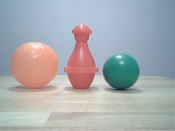

ALVideoDevice¶
NAOqi Vision - Overview | API
What it does¶
ALVideoDevice module is in charge of providing, in an efficient way, images from the video source (e.g. robot’s cameras, Simulator) to all modules processing them, such as ALFaceDetection or ALVisionRecognition.
The picture underneath is a RGB conversion of the YUV422 file sent by the camera.
{kind=link}
How it works¶
As the ALVideoDevice module knows at every moment the list of modules needing images and their requirements, it is able to set the minimum configuration for the video device that will fulfil the needs of all the modules while saving processing resources.
Multi camera support¶
Each Aldebaran robot has specific cameras models, and there are more than one camera on each. For further details, see:
 Video camera
Video camera pepper_video
pepper_video
Performances and Limitations¶
Performances
Best performance on the robot is achieved when processing directly the native colorspace provided by the camera: YUV422. For other colorspaces, a conversion is done by the ALVideoDevice module, so processing times are ranked as follow for the main colorspaces:
YUV422 < Yuv < YUV < RGB/BGR < HSY (close to HSV/HSL colorspaces in term of functionality, but faster to process).
YUV colorspace is convenient as it is more powerful than RGB:
luminance is in the Y channel so don’t need to average the three RGB layers to get a grey level image,
chrominance is purely embedded in both U and V channels, so it’s easier to work on colors compared to RGB for which luminance and chrominance are correlated.
Providing uncorrelated luminance and chrominance channels, it brings almost the same advantages than HSV/HSL without spending as much CPU time for processing it.
Limitations
Currently on ATOM CPU, requesting more than 5fps 1280x960 HD images remotely (getImageRemote) is bringing some frame drops. So we recommend not to go over 5fps HD images if you want to get them through the network. If all modules processing HD images are calling them locally (getImageLocal), there is no such limitation.
Here are the observed framerates when requesting uncompressed YUV422 images on NAO v4 (*).
| local | Gb Ethernet | 100Mb Ethernet | WiFi g | |
|---|---|---|---|---|
| 40x30 (QQQQVGA) | 30fps | 30fps | 30fps | 30fps |
| 80x60 (QQQVGA) | 30fps | 30fps | 30fps | 30fps |
| 160x120 (QQVGA) | 30fps | 30fps | 30fps | 30fps |
| 320x240 (QVGA) | 30fps | 30fps | 30fps | 11fps |
| 640x480 (VGA) | 30fps | 30fps | 12fps | 2.5fps |
| 1280x960 (4VGA) | 29fps | 10fps | 3fps | 0.5fps |
- (*)
- Remote performance might vary with the client network configuration.
- On Windows, Monitor is usually appearing as blocked at 21fps. Other remote modules don’t suffer such a limitation.
- GB Ethernet performance with 1280x960 was observed on WinXP.
Getting started¶
| Step | Action |
|---|---|
Make your vision module subscribe to the ALVideoDevice proxy by
calling ALVideoDeviceProxy::subscribeCamera and passing it
parameters such as resolution, color space and frame rate. |
|
In the main process loop, get an image by calling
ALVideoDeviceProxy::getImageLocal or
ALVideoDeviceProxy::getImageRemote (depending on whether
your module is local or remote). |
|
Release the image calling ALVideoDeviceProxy::releaseImage, |
|
When you stop your module, call
ALVideoDeviceProxy::unsubscribe after exiting the main loop. |
Additional resources¶
OpenCV¶
If you want to develop your own vision module in C++, you might be interested in OpenCV.
It is a large and powerful library dedicated to vision processing. We are currently using OpenCV 2.4.
For further details about OpenCV, see http://opencv.willowgarage.com/wiki/.
See also the tutorial: Using OpenCV.
pYUV¶
A free player for YUV422 images and videos.
The robot’s camera provides natively YUV422 color images.
pYUV is a multiplatform (Windows, Mac and Linux) freeware and can be downloaded from its main page: http://dsplab.diei.unipg.it/pyuv_raw_video_sequence_player_original_one or other sites.
This software can display several non common image and video formats.
Main settings
- Size: Custom with 1280x960, 640x480, 320x240 or 160x120 depending on the resolution used for recording
- Color space: YUV
- Subsampling: 4:2:2
- Ordering: YUY2
- Interleaved: checked
- Anamorphic: unchecked
Extra settings
- Bits per sample: 8
- Header bytes: 32
Vision / Motion conversion¶
Conversion methods can be useful to translate coordinates
to angles and vice versa. For example, if a detection process returns the
position of an object in pixels, this position can be converted to angles and
passed to ALMotionProxy::setAngles to make the robot look in the
direction of the detected object.
Managing simulation¶
Replaying video on robot¶
To replay video on robot you can configure videodevice to simulator mode and use ALVideoDeviceProxy::putImage.